이미지 출처 — 예시의 고문서 사진은 한국학중앙연구원 한국고문서자료관 소장·제공 자료이며, 각 문서에 자료관 뷰어 원본 링크를 달았습니다. 자료관은 이미지 사용에 소장처 동의가 필요하다고 안내합니다(031-730-8873, 8876). 이 이미지를 다시 쓰려면 자료관에 문의하세요. 게재에 문제가 있으면 이슈 나 chgsong@naver.com으로 알려 주시면 바로 내리겠습니다.
영상 — 「고문서 한 장」 26편
좌우로 넘겨 보세요. 영상이 끝나면 다음 편이 이어서 재생됩니다. 「가로 16:9」를 누르면 유튜브용 가로 영상으로 바뀌고, 「릴스 문구 복사」를 누르면 게시 글이 복사됩니다.
‹ ›
EP.01 · 소개 흩어진 기록을, 다시 이야기로 임명장 한 장에서 시작해 ① 수집부터 ⑤ 패키징까지
83초
EP.02 · 소개 만든 것 보기 말 한마디로 만든 전시·카드뉴스·활동지, 에디팅 전후, 두 집안 비교
48초
EP.03 · 사찰 직지사를 다시 세운 손들의 기록 김천 직지사 · 문서 50건 중 8점
32초 · 가로 32초
EP.04 · 마을 정조의 윤음이 닿은 섬마을, 수산리 제주 애월 수산리 · 1784–1880 · 8점
37초 · 가로 37초
EP.05 · 서원 남계서원을 지키고 꾸린 문서들 함양 남계서원 · 1733–1940 · 8점
32초 · 가로 32초
EP.06 · 박물관 명성황후가 남긴 한글 편지 명성황후기념관 · 1888–1890 · 8통
33초 · 가로 33초
EP.07 · 박물관 임금이 할머니에게 쓴 편지 오죽헌·시립박물관 · 1665 무렵 · 편지 7통
50초 · 가로 50초
EP.08 · 문중 운조루를 지은 무관, 유이주의 길 구례 오미 문화류씨 운조루 · 1659–1784 · 7점
49초 · 가로 49초
EP.09 · 문중 160년 뒤에 되찾은 제사 땅 거창 동계 정온 종가 · 1403–1825 · 6점
49초 · 가로 49초
EP.10 · 마을 섬마을 구조라리 사람들의 호소 거제 일운 구조라리 · 1850–1912 · 8점
49초 · 가로 49초
EP.11 · 마을 정조의 윤음에서 금융조합까지, 하가리 제주 애월 하가리 · 1781–1912 · 8점
46초 · 가로 46초
EP.12 · 사찰 용문사에 남은 기도와 살림의 기록 예천 용문사 · 1514–1879 · 8점
39초 · 가로 39초
EP.13 · 서원 남명 조식을 위한 200년의 상소 산청 덕천서원 · 1609–1814 · 6점
42초 · 가로 42초
EP.14 · 문중 임금의 부름에 나아가지 않은 선비, 윤증 논산 명재 윤증 종가 · 1654–1701 · 8점
49초 · 가로 49초
EP.15 · 서원 병산서원을 움직인 사람들 안동 병산서원 · 1610–1811 · 7점
46초 · 가로 46초
EP.16 · 문중 『동사강목』을 쓴 학자, 안정복의 벼슬길 광주 순암 안정복 종가 · 1607–1790 · 8점
42초 · 가로 42초
EP.17 · 문중 임금이 부르고, 아들이 지킨 선비 — 회재 이언적 경주 옥산 여주이씨 독락당 · 1539–1599 · 6점
117초 · 가로 117초
EP.18 · 문중 "경은 나를 버리고 쉬려는가" — 전쟁의 재상 류성룡 안동 하회 풍산류씨 · 1592–1627 · 6점
100초 · 가로 100초
EP.19 · 문중 공신의 교서에서 증손의 답안지까지 — 양동 경주손씨 170년 경주 양동 경주손씨 종가 송첨 · 1467–1636 · 4점
94초 · 가로 94초
EP.20 · 문중 임청각, 귀거래의 집이 지켜 온 것 안동 법흥 고성이씨 종가 임청각 · 1684–1900 · 4점
88초 · 가로 88초
EP.21 · 문중 학봉 종가의 안채 — 혼서와 한글 편지 안동 금계 의성김씨 학봉 김성일 종가 · 1841–1841 · 3점
74초 · 가로 74초
EP.22 · 문중 부름을 사양한 학자, 서계 박세당 의정부 장암 반남박씨 서계 박세당 종가 · 1668–1827 · 5점
87초 · 가로 87초
EP.23 · 문중 "병이 나았다니, 서둘러 올라오라" — 우복 종가 300년 상주 우산 진주정씨 우복 정경세 종가 · 1589–1901 · 4점
91초 · 가로 91초
EP.24 · 문중 흉년에 판 밭, 전서로 쓴 혼서 — 이재 황윤석 집안 고창 흥덕 평해황씨 이재 황윤석 종가 · 1686–1780 · 4점
92초 · 가로 92초
EP.25 · 향교 고을의 학교를 다시 세운 사람들 — 거창향교 300년 거창 거창향교 · 1636–1925 · 4점
93초 · 가로 93초
EP.26 · 박물관 꽃 편지지에 쓴 왕비의 마지막 편지들 국립고궁박물관 · 1886–1894 · 4점
84초 · 가로 84초
결과물 — 예시 27개 · 소장처 26곳
예시마다 전시 웹페이지·수업 활동지·카드뉴스·SNS 글을 만들었습니다. 전시 웹페이지와 활동지에는 문서마다 읽기 도움(판독 · 해제 · 내용 요약) 이 붙어 있어 옛 한자·흘림 글씨를 몰라도 읽을 수 있습니다. 문중(집안)뿐 아니라 사찰·마을·서원·박물관에도 같은 방법이 통합니다.
‹ ›
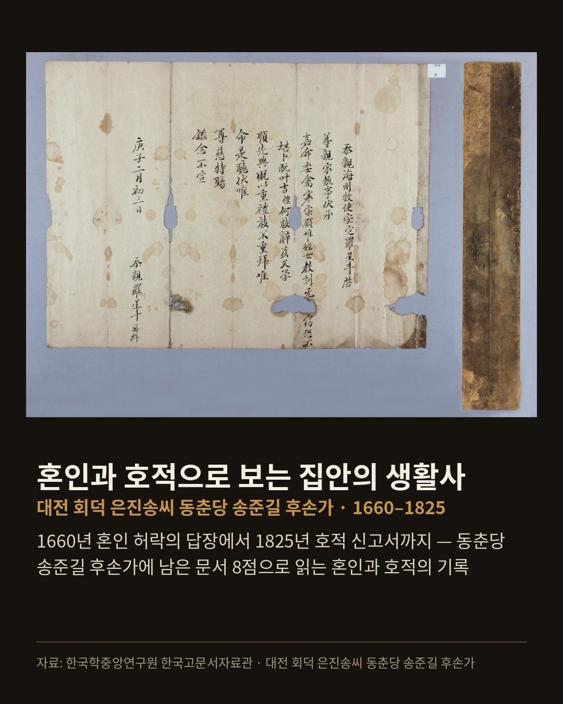
③ 에디팅 후 혼인과 호적으로 보는 집안의 생활사 대전 회덕 은진송씨 동춘당 송준길 후손가 · 1660–1825 · 8점
Claude가 다듬은 이야기 문장으로 만든 전시·카드뉴스·활동지
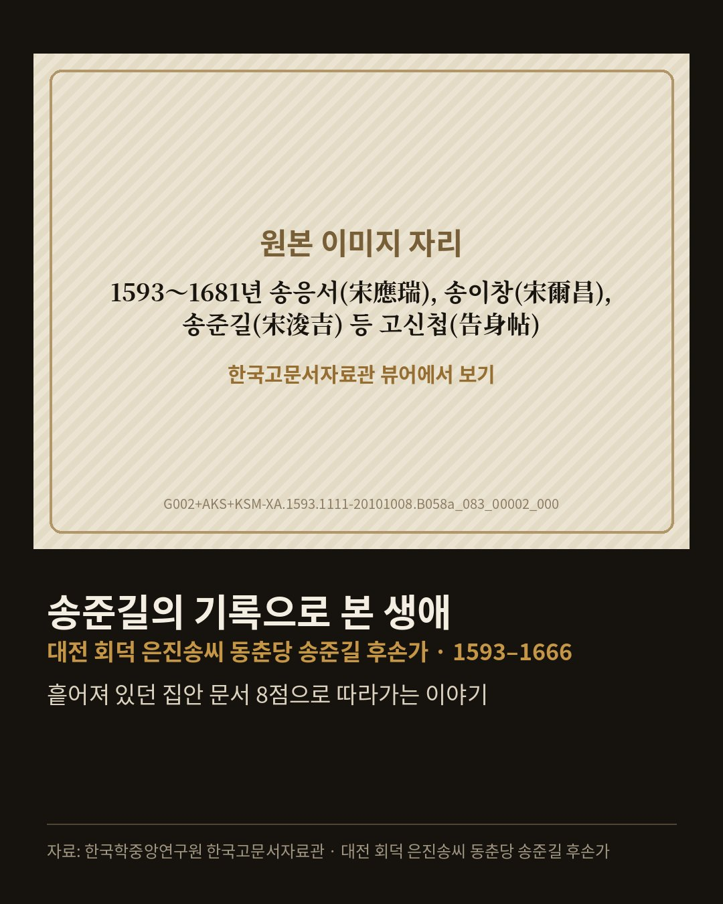
③ 에디팅 전 송준길의 기록으로 본 생애 같은 소장처 · 1593–1671 · 6점
자동 선별·자동 캡션 초안 그대로 — 에디팅 전 상태. 같은 첩 이미지를 공유하는 낱장 문서는 하나만 골랐습니다
다른 소장처 땅과 관청 사이 — 문서로 보는 집안 살림 대전 무수동 안동권씨 유회당 권이진 종가 · 1695–1843 · 8점
문서유형(명문·고목·첩정…)으로 직접 정한 테마
EP.3 · 사찰 절을 짓고 다시 세운 기록 김천 직지사 · 문서 50건 중 8점
사적·중건기·상량문·헌답기 — 나무판과 종이에 남은 절의 건축사
EP.4 · 마을 섬마을에 내려온 약속 제주 애월 수산리 · 1784–1880 · 8점
정조의 윤음부터 마을의 향약·절목까지
EP.5 · 서원 서원을 지키고 꾸린 기록 함양 남계서원 · 1733–1940 · 8점
논밭 장부·완문·상량문·건물 배치도
EP.6 · 박물관 왕비의 편지 명성황후기념관 · 1888–1890 · 8통
명성황후가 민영소에게 보낸 한글 편지
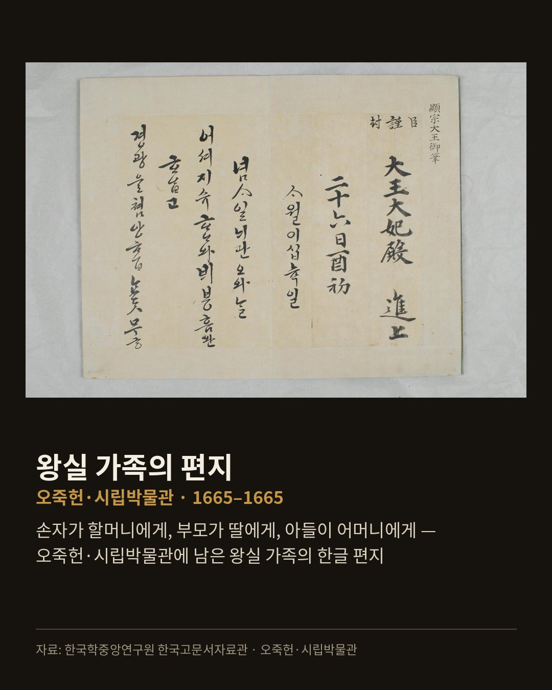
EP.7 · 박물관 왕실 가족의 편지 오죽헌·시립박물관 · 1665 무렵 · 편지 7통
“임금도 할머니에게 편지를 썼을까요?”
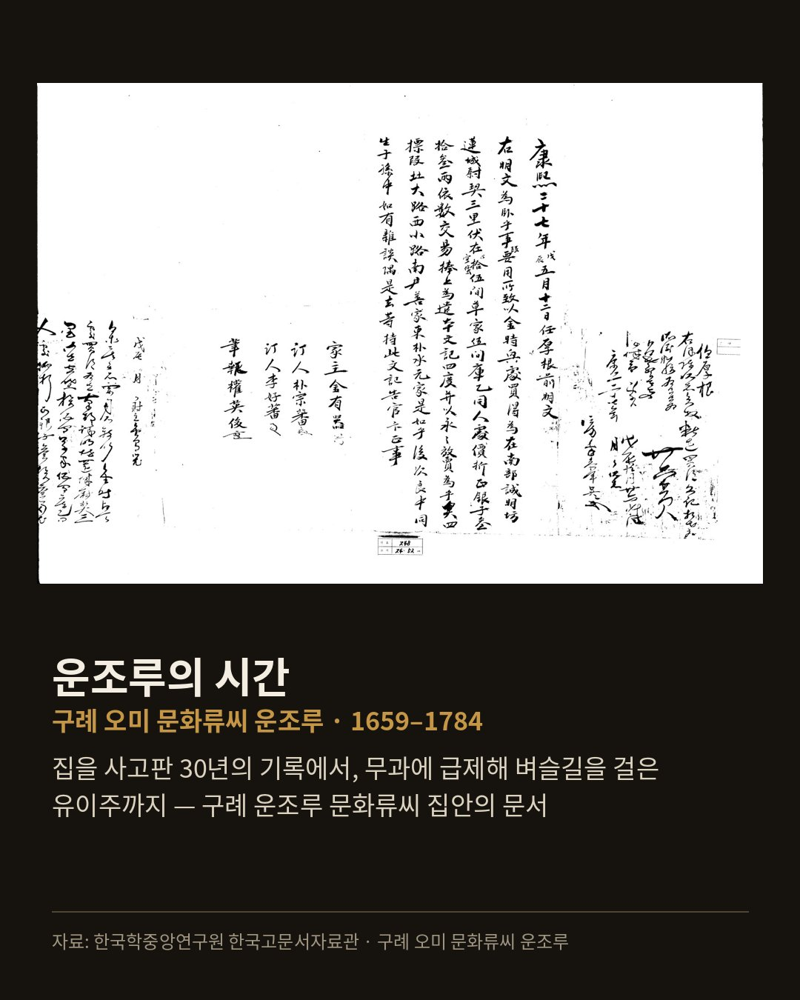
EP.8 · 문중 운조루의 시간 구례 오미 문화류씨 운조루 · 1659–1784 · 7점
“운조루를 지은 유이주, 그는 어떤 길을 걸어왔을까요?”
EP.9 · 문중 되찾은 제사 땅 거창 동계 정온 종가 · 1403–1825 · 6점
“조상의 제사 땅이 남의 장부에 들어가 버렸다면?”
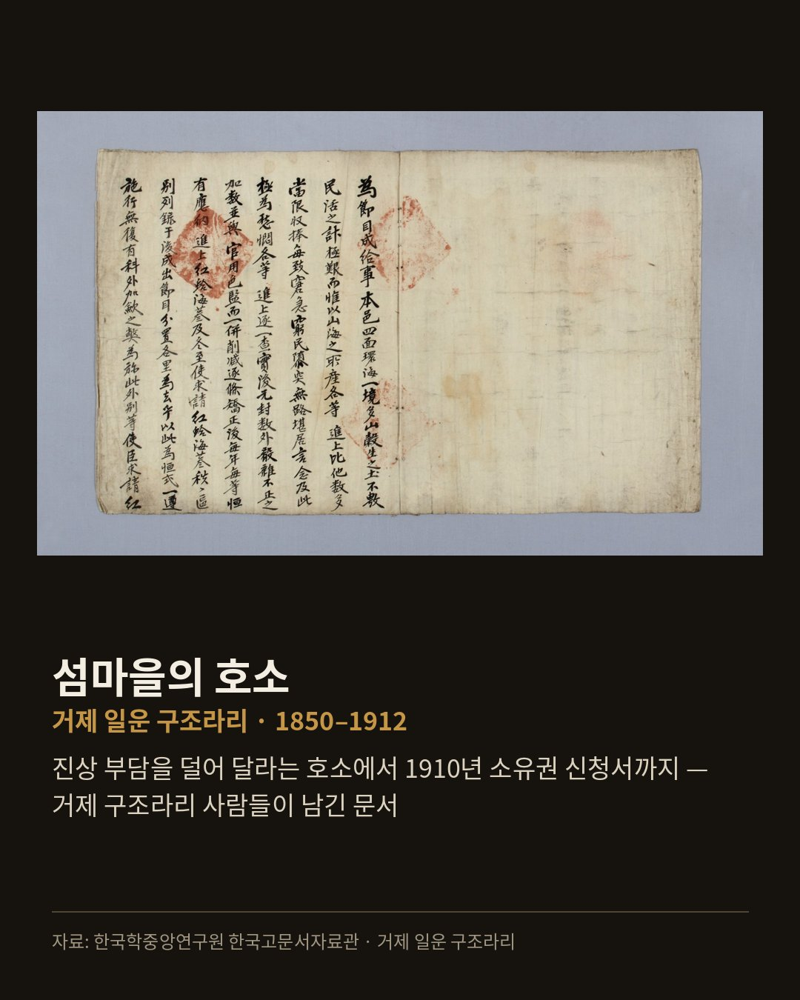
EP.10 · 마을 섬마을의 호소 거제 일운 구조라리 · 1850–1912 · 8점
“섬마을 사람들은 무엇을 호소했을까요?”
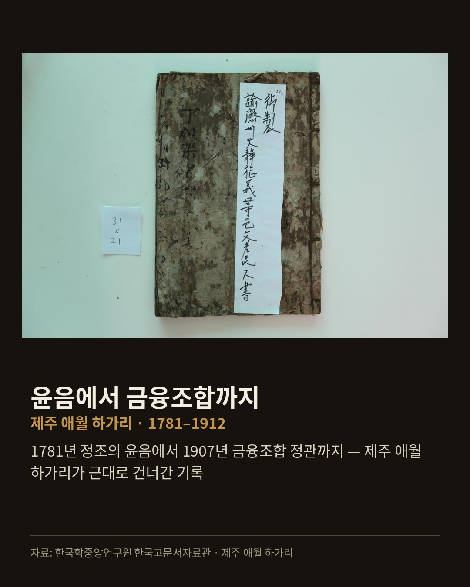
EP.11 · 마을 윤음에서 금융조합까지 제주 애월 하가리 · 1781–1912 · 8점
“왕의 말씀에서 은행까지, 한 마을이 걸어온 길은?”
EP.12 · 사찰 기도와 살림의 기록 예천 용문사 · 1514–1879 · 8점
“불상 안에는 무엇이 들어 있을까요?”
EP.13 · 서원 200년의 상소 산청 덕천서원 · 1609–1814 · 6점
“한 스승을 높이기 위해, 200년 동안 상소를 올린 사람들이 있습니다.”
EP.14 · 문중 나아가지 않은 선비 논산 명재 윤증 종가 · 1654–1701 · 8점
“임금이 수십 번 불러도, 나아가지 않은 선비가 있습니다.”
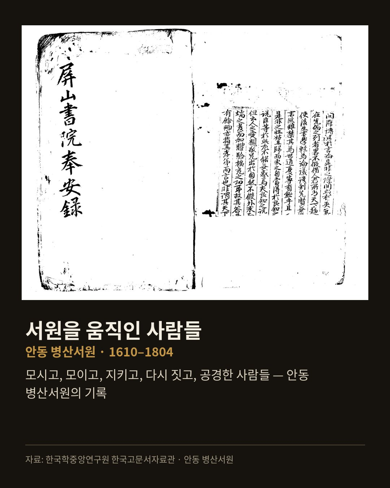
EP.15 · 서원 서원을 움직인 사람들 안동 병산서원 · 1610–1811 · 7점
“서원을 움직인 사람들은 누구였을까요?”
EP.16 · 문중 학자의 벼슬길 광주 순암 안정복 종가 · 1607–1790 · 8점
“『동사강목』을 쓴 학자는 어떤 벼슬길을 걸었을까요?”
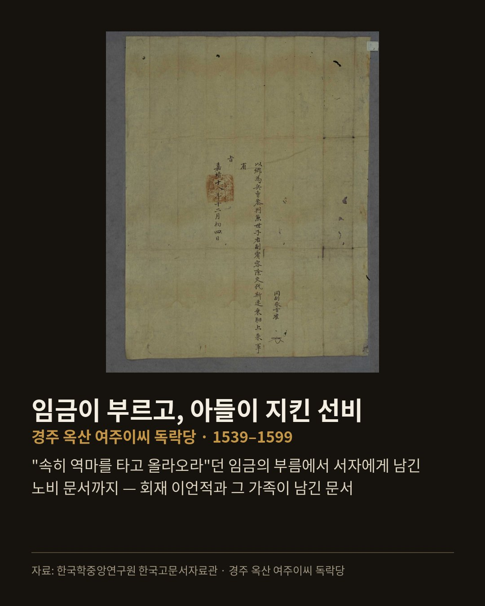
EP.17 · 문중 · 원문 읽기 임금이 부르고, 아들이 지킨 선비 경주 옥산 여주이씨 독락당 · 1539–1599 · 6점
"속히 역마를 타고 올라오라"던 임금의 부름에서 서자에게 남긴 노비 문서까지 — 회재 이언적과 그 가족이 남긴 문서
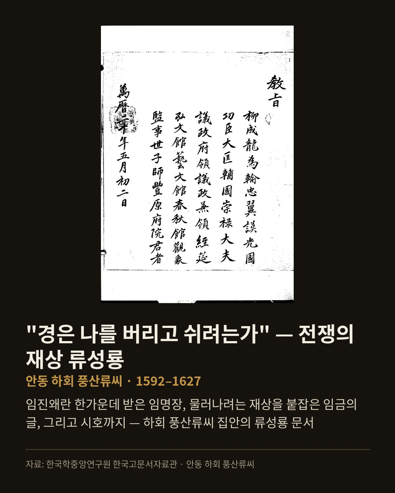
EP.18 · 문중 · 원문 읽기 "경은 나를 버리고 쉬려는가" — 전쟁의 재상 류성룡 안동 하회 풍산류씨 · 1592–1627 · 6점
임진왜란 한가운데 받은 임명장, 물러나려는 재상을 붙잡은 임금의 글, 그리고 시호까지 — 하회 풍산류씨 집안의 류성룡 문서
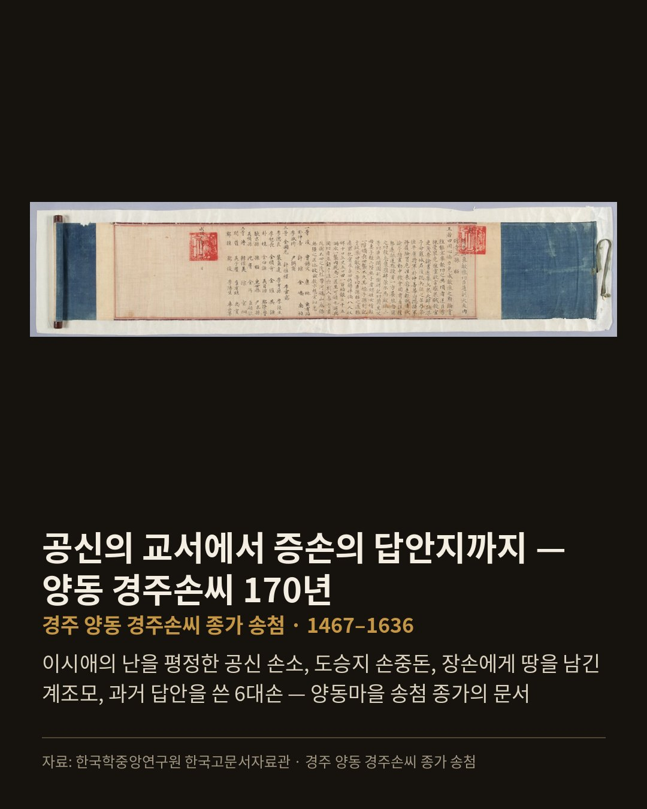
EP.19 · 문중 · 원문 읽기 공신의 교서에서 증손의 답안지까지 — 양동 경주손씨 170년 경주 양동 경주손씨 종가 송첨 · 1467–1636 · 4점
이시애의 난을 평정한 공신 손소, 도승지 손중돈, 장손에게 땅을 남긴 계조모, 과거 답안을 쓴 6대손 — 양동마을 송첨 종가의 문서
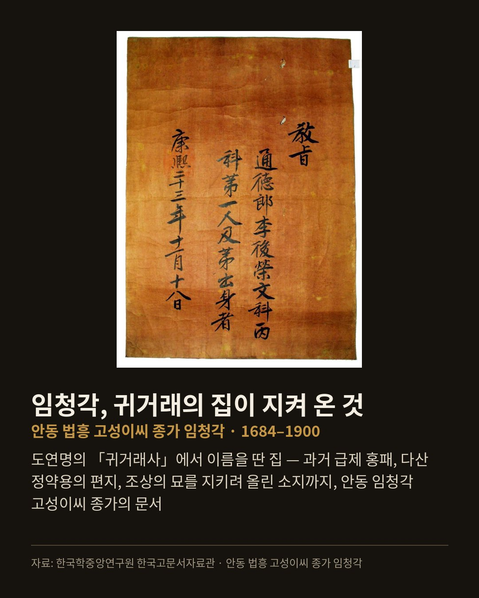
EP.20 · 문중 · 원문 읽기 임청각, 귀거래의 집이 지켜 온 것 안동 법흥 고성이씨 종가 임청각 · 1684–1900 · 4점
도연명의 「귀거래사」에서 이름을 딴 집 — 과거 급제 홍패, 다산 정약용의 편지, 조상의 묘를 지키려 올린 소지까지, 안동 임청각 고성이씨 종가의 문서
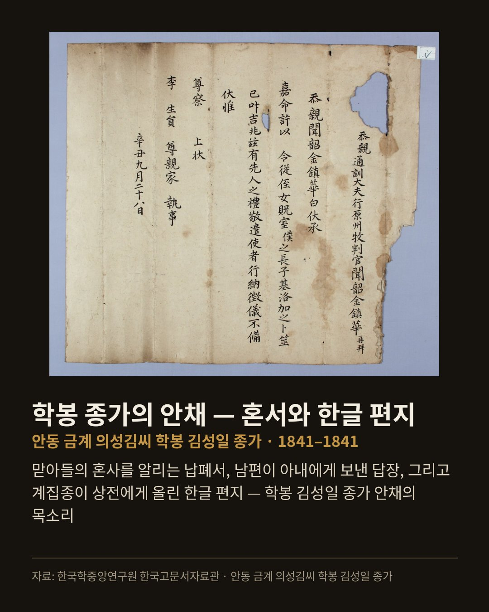
EP.21 · 문중 · 원문 읽기 학봉 종가의 안채 — 혼서와 한글 편지 안동 금계 의성김씨 학봉 김성일 종가 · 1841–1841 · 3점
맏아들의 혼사를 알리는 납폐서, 남편이 아내에게 보낸 답장, 그리고 계집종이 상전에게 올린 한글 편지 — 학봉 김성일 종가 안채의 목소리
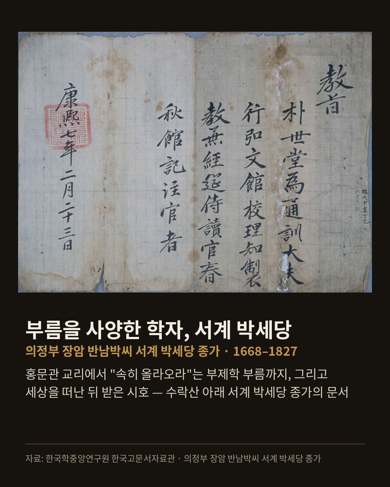
EP.22 · 문중 · 원문 읽기 부름을 사양한 학자, 서계 박세당 의정부 장암 반남박씨 서계 박세당 종가 · 1668–1827 · 5점
홍문관 교리에서 "속히 올라오라"는 부제학 부름까지, 그리고 세상을 떠난 뒤 받은 시호 — 수락산 아래 서계 박세당 종가의 문서
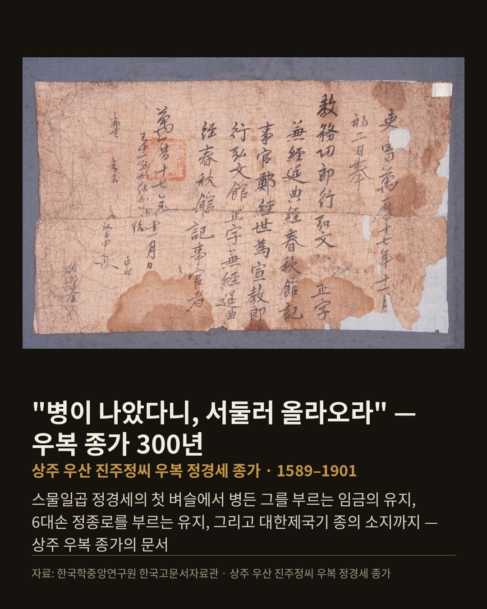
EP.23 · 문중 · 원문 읽기 "병이 나았다니, 서둘러 올라오라" — 우복 종가 300년 상주 우산 진주정씨 우복 정경세 종가 · 1589–1901 · 4점
스물일곱 정경세의 첫 벼슬에서 병든 그를 부르는 임금의 유지, 6대손 정종로를 부르는 유지, 그리고 대한제국기 종의 소지까지 — 상주 우복 종가의 문서
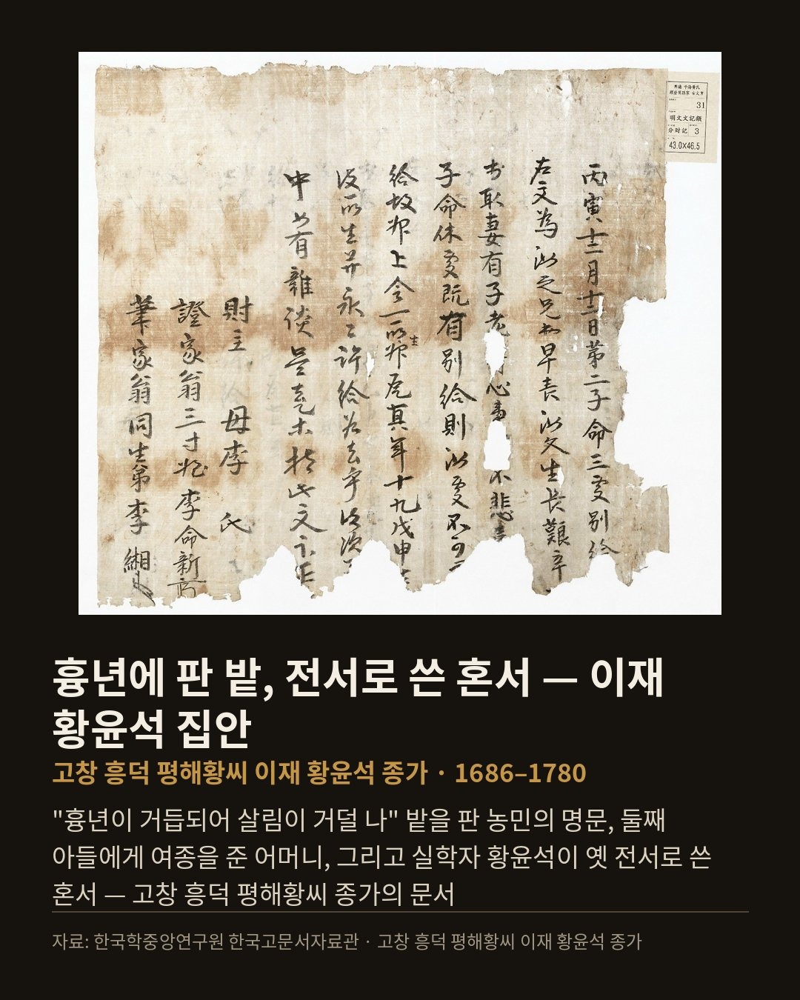
EP.24 · 문중 · 원문 읽기 흉년에 판 밭, 전서로 쓴 혼서 — 이재 황윤석 집안 고창 흥덕 평해황씨 이재 황윤석 종가 · 1686–1780 · 4점
"흉년이 거듭되어 살림이 거덜 나" 밭을 판 농민의 명문, 둘째 아들에게 여종을 준 어머니, 그리고 실학자 황윤석이 옛 전서로 쓴 혼서 — 고창 흥덕 평해황씨 종가의 문서
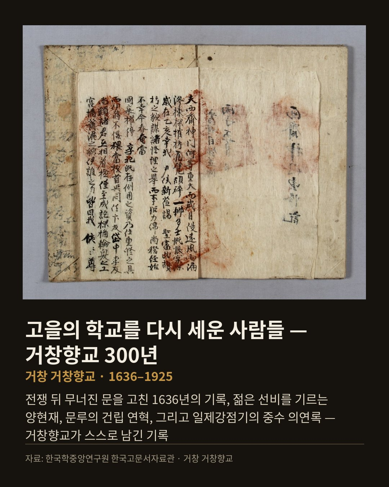
EP.25 · 향교 · 원문 읽기 고을의 학교를 다시 세운 사람들 — 거창향교 300년 거창 거창향교 · 1636–1925 · 4점
전쟁 뒤 무너진 문을 고친 1636년의 기록, 젊은 선비를 기르는 양현재, 문루의 건립 연혁, 그리고 일제강점기의 중수 의연록 — 거창향교가 스스로 남긴 기록
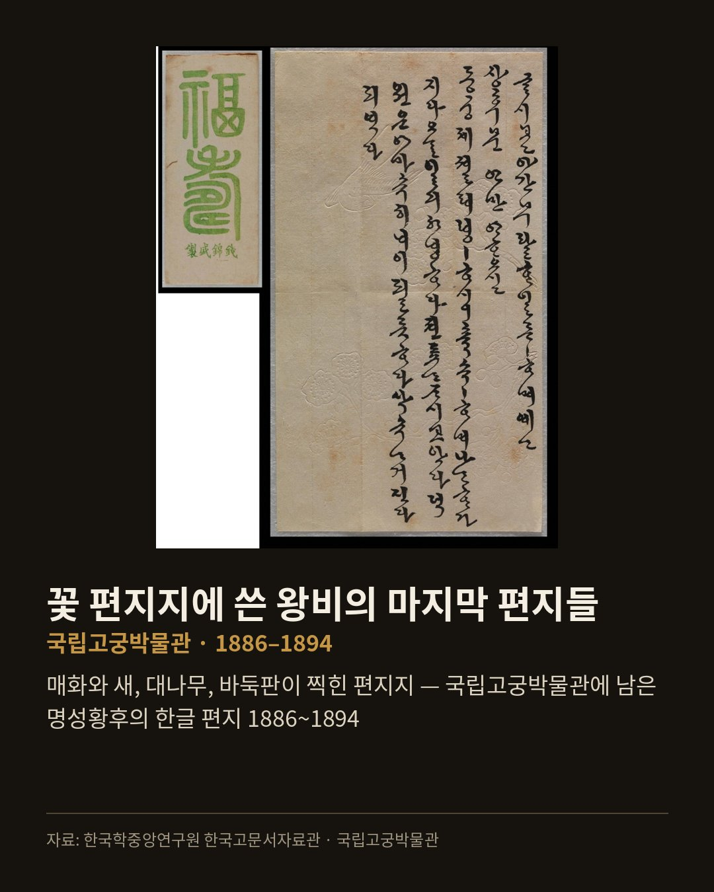
EP.26 · 박물관 · 원문 읽기 꽃 편지지에 쓴 왕비의 마지막 편지들 국립고궁박물관 · 1886–1894 · 4점
매화와 새, 대나무, 바둑판이 찍힌 편지지 — 국립고궁박물관에 남은 명성황후의 한글 편지 1886~1894
에디팅 전과 후 — 예시 27개 전체
예시를 고르면 문서마다 자동 초안 (edit가 문서명으로 만든 문장) → 에디팅 후 (이야기로 다듬은 문장) → 읽기 도움 (해제·내용 요약)이 어떻게 달라지는지 볼 수 있습니다. 검토 칸을 비워 둔 줄에는 결과물마다 "초안" 표시가 남습니다.
혼인과 호적으로 보는 집안의 생활사 송준길의 기록으로 본 생애 땅과 관청 사이 — 문서로 보는 집안 살림 EP.3 절을 짓고 다시 세운 기록 EP.4 섬마을에 내려온 약속 EP.5 서원을 지키고 꾸린 기록 EP.6 왕비의 편지 EP.7 왕실 가족의 편지 EP.8 운조루의 시간 EP.9 되찾은 제사 땅 EP.10 섬마을의 호소 EP.11 윤음에서 금융조합까지 EP.12 기도와 살림의 기록 EP.13 200년의 상소 EP.14 나아가지 않은 선비 EP.15 서원을 움직인 사람들 EP.16 학자의 벼슬길 EP.17 임금이 부르고, 아들이 지킨 선비 EP.18 "경은 나를 버리고 쉬려는가" — 전쟁의 재상 류성룡 EP.19 공신의 교서에서 증손의 답안지까지 — 양동 경주손씨 170년 EP.20 임청각, 귀거래의 집이 지켜 온 것 EP.21 학봉 종가의 안채 — 혼서와 한글 편지 EP.22 부름을 사양한 학자, 서계 박세당 EP.23 "병이 나았다니, 서둘러 올라오라" — 우복 종가 300년 EP.24 흉년에 판 밭, 전서로 쓴 혼서 — 이재 황윤석 집안 EP.25 고을의 학교를 다시 세운 사람들 — 거창향교 300년 EP.26 꽃 편지지에 쓴 왕비의 마지막 편지들
# 문서 자동 초안 에디팅 후 읽기 도움 (해제 · 내용 요약)
카드뉴스 한눈에
예시 27개의 카드뉴스 227장 — 예시를 고르면 그 카드뉴스(1080×1350)를 표지부터 마지막 장까지 넘겨 볼 수 있습니다.
혼인과 호적으로 보는 집안의 생활사10장 송준길의 기록으로 본 생애10장 땅과 관청 사이 — 문서로 보는 집안 살림10장 EP.3 절을 짓고 다시 세운 기록10장 EP.4 섬마을에 내려온 약속10장 EP.5 서원을 지키고 꾸린 기록10장 EP.6 왕비의 편지10장 EP.7 왕실 가족의 편지9장 EP.8 운조루의 시간9장 EP.9 되찾은 제사 땅8장 EP.10 섬마을의 호소10장 EP.11 윤음에서 금융조합까지10장 EP.12 기도와 살림의 기록10장 EP.13 200년의 상소8장 EP.14 나아가지 않은 선비10장 EP.15 서원을 움직인 사람들9장 EP.16 학자의 벼슬길10장 EP.17 임금이 부르고, 아들이 지킨 선비8장 EP.18 "경은 나를 버리고 쉬려는가" — 전쟁의 재상 류성룡8장 EP.19 공신의 교서에서 증손의 답안지까지 — 양동 경주손씨 170년6장 EP.20 임청각, 귀거래의 집이 지켜 온 것6장 EP.21 학봉 종가의 안채 — 혼서와 한글 편지5장 EP.22 부름을 사양한 학자, 서계 박세당7장 EP.23 "병이 나았다니, 서둘러 올라오라" — 우복 종가 300년6장 EP.24 흉년에 판 밭, 전서로 쓴 혼서 — 이재 황윤석 집안6장 EP.25 고을의 학교를 다시 세운 사람들 — 거창향교 300년6장 EP.26 꽃 편지지에 쓴 왕비의 마지막 편지들6장
‹ ›
여러 소장처 비교 (대량 유사 연구)
예시에 쓴 소장처 16곳(문중·사찰·마을·서원·박물관) 4,934건을 같은 방식으로 정리해 비교했습니다. 문중에는 고신(임명장)이, 마을에는 절목(규정)이, 서원에는 장부가 많듯 소장처마다 남긴 기록의 결이 다릅니다.
직접 해 보기
/plugin marketplace add changgi/archive-tools
/plugin install aks-archive-harvester@changgi-archive-tools
💬 한국고문서자료관에서 유회당 권이진 종가 문서 받아줘
💬 이 집안 문서로 어떤 이야기를 만들 수 있을까?
💬 혼인과 호적 테마로 전시 웹페이지랑 카드뉴스 만들어줘
💬 대전 문중들을 비교 연구할 수 있게 패키지로 묶어줘
터미널에서 직접 실행하는 단계별 예제는 examples/README.md 에 있습니다.